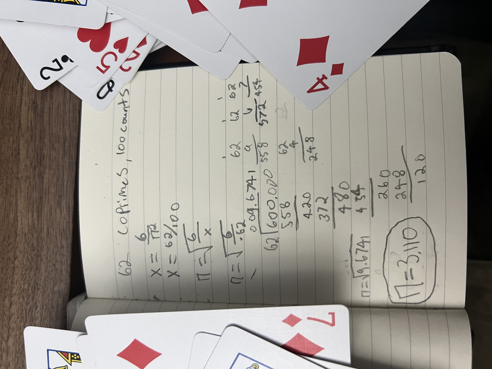
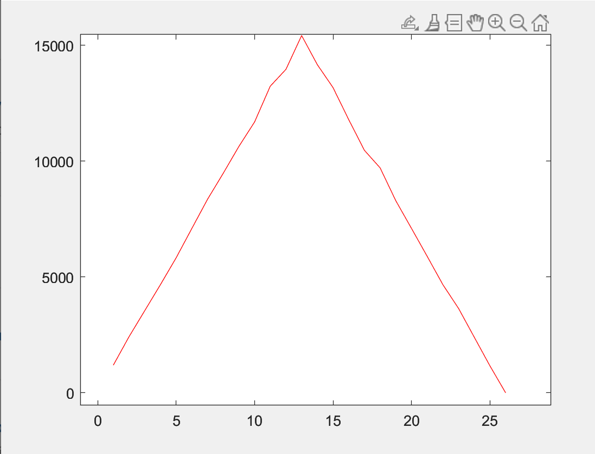

Home
Back to Projects
Co-prime Probability to Calculate Pi
The probability that two random numbers are co-prime (meaning they do not share any factors besides 1) is equal to six divided by pi squared.
For pi day 2022 I calculated pi using this method. I generated quasi random numbers using a shuffled deck of cards. I took two cards off the top of the deck, added them together, and did the same again with the next two cards. Adding the cards together gave me a wider range of random numbers. I then compared the cards for co-primaliy and marked down if they were or not co-primes. I did this comparison 100 times. The ratio of co-primes to total comparisons is x in the equation below.

Although I got a number staggeringly close to pi, I later realized that I had creating a distribution about the value of 14 by adding two random cards together. I made sure of my mistake by graphing the chances of getting numbers 1:26 in MATLAB and found I truly did make a mistake. The graph of the distribution if below.
